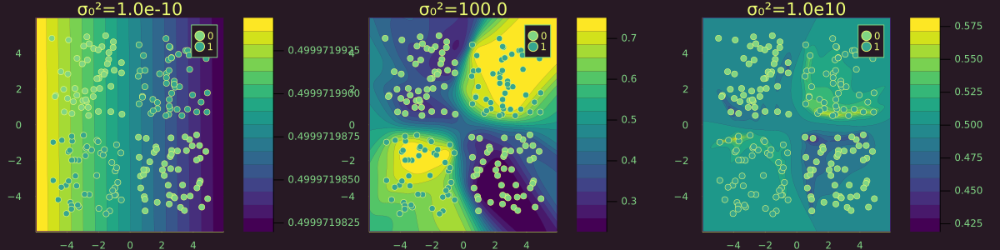
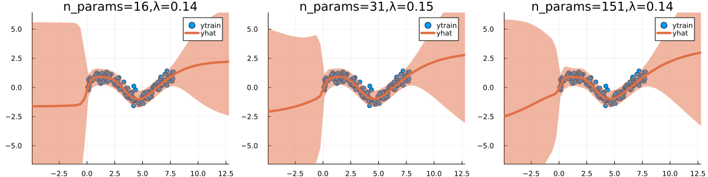

This documentation is still incomplete.
A quick note on the prior
General Effect
High prior precision → only observation noise. Low prior precision → high posterior uncertainty.
using LaplaceRedux.Data
n = 150 # number of observations
σtrue = 0.30 # true observational noise
x, y = Data.toy_data_regression(n;noise=σtrue)
xs = [[x] for x in x]
X = permutedims(x)
Effect of Model Size on Optimal Choice
For larger models, the optimal prior precision λ as evaluated through Empirical Bayes tends to be smaller.
